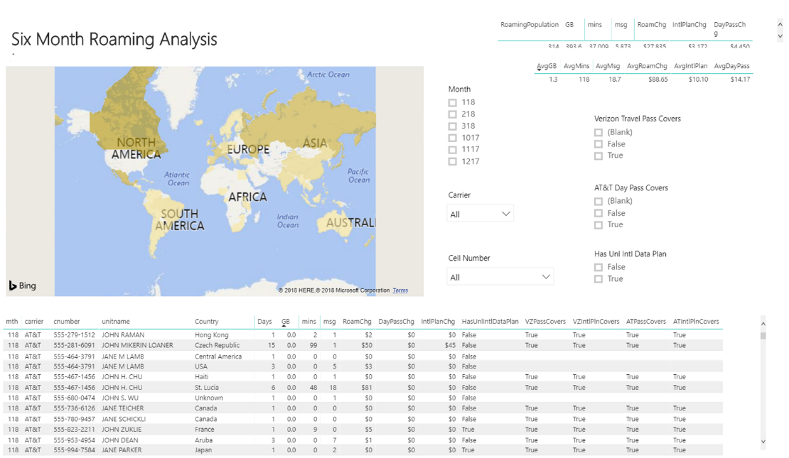

Mobile Management Services
Request Free AsseementBusiness Challenge
The explosion of the “Work from Home” movement is having some troubling effects on
already stretched corporate budgets. Many firms lacking a professional Mobile Expense Management and
Rate Plan Optimization program are receiving bills that are busting budgets and the pain won’t stop
until these plans are professionally optimized to align with the new usage patterns. Since patterns
won’t stabilize anytime soon, as the workforce ebbs and flows, it’s imperative that Enterprises put in
place a real time Mobile Optimization strategy.
Since many corporate mobile plans rely on Pools of Minutes and Pooled Data Usage, the shift to a mobile
workforce is driving volatility in usage patterns and pushing enterprises above their historical pool
maximums resulting in expensive variable usage charges. The result is big increases in invoices and an
emergency response to re-write the Corporate Mobility Policy to stem the bleeding.
The budget overruns go well beyond the inventory of Corporate Liable Devices (CLM). Employees who had
little justification for a Corporate Phone, are expected to work from home using their personal devices.
Since their patterns and usage has changed, they too are seeing an increase in billing and many are
looking for their employer to reimburse this expense. This creates “tail spend”, which shows up in the
corporate expense reimbursement process rather than the IT infrastructure budget.
Business Solution: Free Mobile Assessment
The Mobile Assessment Offering is delivered thru experienced partners and helps
enterprises eliminate excess wireless spend with a combination of advanced analytics software and expert
rate plan analysts that ensure the most efficient alignment of rate plans to your usage. This results in
a more comprehensive approach that yields greater cost savings.
The Assessment begins with learning more about your business, operational structure, and the desired
results for the project. We conduct a preliminary review of your Contracts and Invoices to quickly
identify areas of best optimization. This allows us to return an analysis and set of broad
recommendations that is custom to your needs, realistic and executable.
Free Assessment Includes:
- Consultation w Client
- Feeding latest invoices into the Magellan Software for analysis
- Only portal based invoices for US carriers will be included in the Free Assessment
- Professional Analysis of the results to identify savings and strategies
- Development of a Presentation of the Results
- Presentation Back to Client on these Initial Savings Results, Recommendations & Next Steps
The Mobile Assessment focuses on four key cost components that make up your wireless spend.
1) Voice:
While Data usage now exceeds voice the need to for forensic examination of voice consumption patterns still provides significant savings opportunities. While most optimizations efforts just manage pooled plans, ours analyzes both individual consumption with the aggregate usage to maximize savings.
2) Data:
Data charges have now overtaken voice as the number one expense on enterprise billing for all corporations and this is not surprise given the explosion in Smartphones and data applications that are currently available in the marketplace. Most enterprises are increasing their wireless data initiatives while Wireless carriers continue to add complexity with new rate plans. This year we have seen considerable focus on unlimited plans. While this sounds great for most users it is unnecessary.
3) Messaging:
Text Messaging, Premium Text Messaging, Text Alerts and Instant Messaging services fees are still a sizeable portion of your total wireless spend. More and more of today’s workforce are accustomed to having text messaging capabilities as one of their primary means of communicating. As a best practice, we help organizations define and implement policies that enable text messaging based on the end-user's position and the value that text messaging can deliver.
4) Features:
Wireless carriers have added a multitude of optional features and services in order to drive-up their average revenue per user per month at your expense. As an example, a major carrier lists 47 optional features and services that can be added to a plan. Optional features and services include roadside assistance and insurance to spam controls and mobile hotspot capabilities
Free Assessment Benefits
The Mobile assessment typically identifies between 20% - 40% in savings, even if you are optimizing spend internally or through a third party. The recommendations may not require any changes to carriers and/or equipment.. Clients typically proceed with an Initial Rate Plan Optimization and Recurring Mobile Management Services based on the findings of the Assessment. The Rate Plan Optimization program allows clients to monetize the savings identified in the Assessment.
Rate Plan Optimization
Mobile Management Services deliver strategies for optimal cost savings that considers end users’ habits and provides a lower cost model at the company level. This is accomplished through viewing all users billing data, looking at the synergistic best fit for the client, then designing plan structures to accommodate the requirements. End user costs can be allocated back to the end user based on service consumption using allocation modeling. Mobile Management Services are covered by a Total Savings Guarantee that ensure you will reduce your total initial cost of ownership by more than the fee, else you will receive a credit for the difference. CFO’s love the ROI on Mobile Management Services.
Components of Mobile Management Services address the following areas:
- Objective Wireless Carrier Review
- Wireless Asset Inventory
- Elimination or Suspension of Zero-Use Accounts
- Individual & Pool Plan Optimization
- Advanced Usage Analytics and Reporting
- Alignment with the Most Efficient Plans, Including Promotional Plans, Incentives and Grandfathered Plans
- Dedicated Rate Plan Analysts that Deliver Greater Savings than Software Alone
- Wireless Rate Plan Changes Implemented with Your Wireless Carriers
- Complete Visibility and Control Over Wireless Rate Plan Changes
The reporting provided with the Mobile Assessment gives you complete visibility of your mobile enterprise.
Additional Mobile Management Services
Professional’s leverage mobility domain expertise, processes, and our proprietary software platform Magellan to provide the following services:
- Ongoing Optimization
- Metrics Benchmarking
- Mobile Strategy Assistance
- Carrier Relationship Management
- Carrier Contract Review and Input
- Facilitation of Carrier Change Orders
- Special Project Assistance
- Monthly Zero / Low Use Analysis
- Integration of Client Data
- AP Coding with Allocations
- Industry Updates
- Wireless Policy Assistance
- Expense Management & Reporting
- Procurement and Provisioning Services
- Cost Control Policy Development
- 24/7/365 Technical Support
- MDM Deployment & Administration
- International Mobile Management
- Recycle Program
- Staffing as a Service
- Asset Management
- Repair Program
- Kitting, Staging, Device Logistics
- Employee Programs
- Employee Programs
- Tender Management